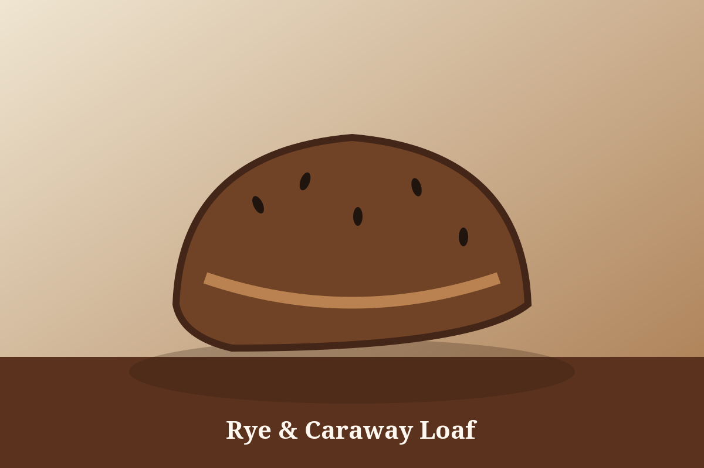

Quality
We bake in small batches and never compromise on flavour, freshness or presentation.
Craft, care and community in every bake.
FreshBite Bakery was founded in 2019 with a simple idea: excellent baked goods should be made with honest ingredients and shared generously. What began as a small neighbourhood bakery has grown into a trusted destination for everyday bread, custom cakes and special-event catering.
Our team uses long fermentation, hand shaping and seasonal recipes to bring depth of flavour to every loaf and pastry. We work with North Carolina farms and suppliers whenever possible, helping strengthen the regional food economy.

We bake in small batches and never compromise on flavour, freshness or presentation.
We reduce waste, choose responsible suppliers and celebrate seasonal ingredients.
We support local events, farmers’ markets and the people who make Durham special.